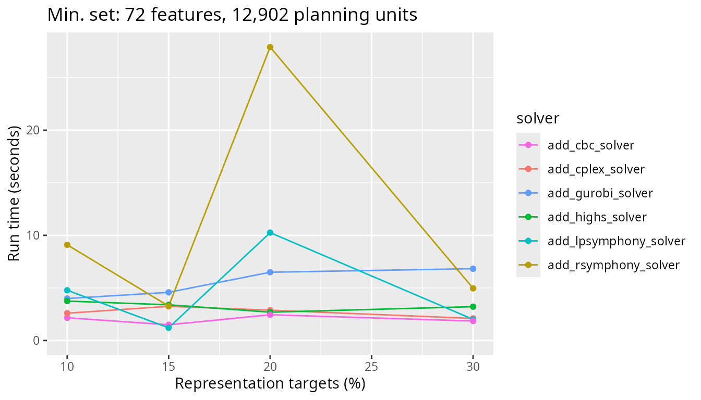
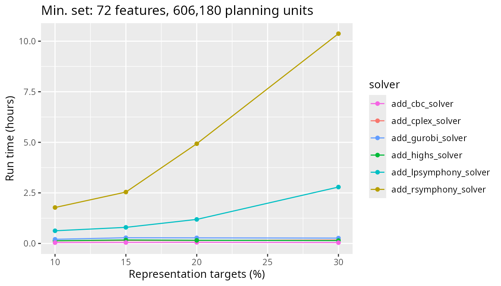
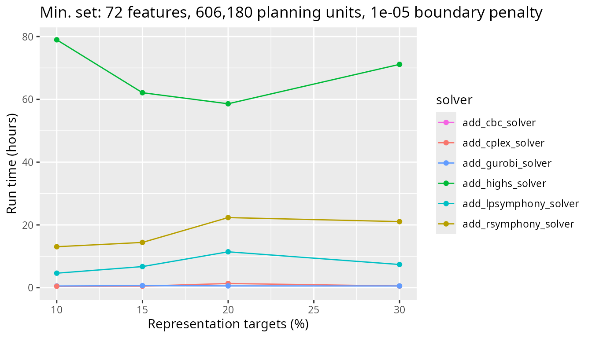
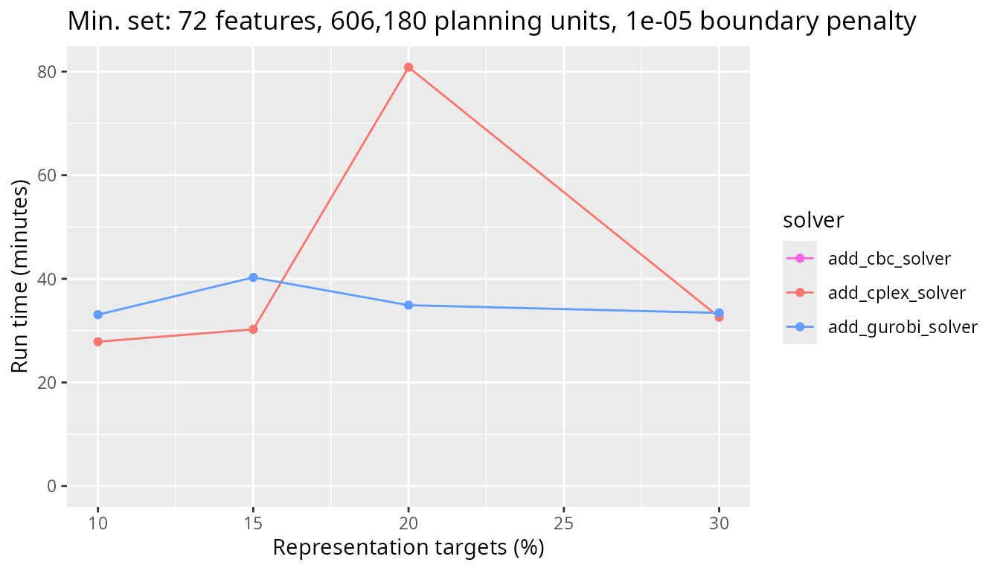
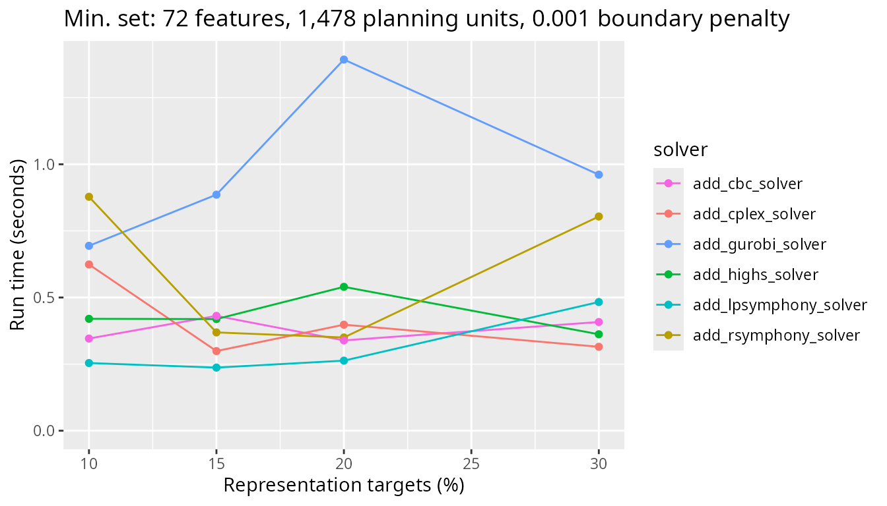
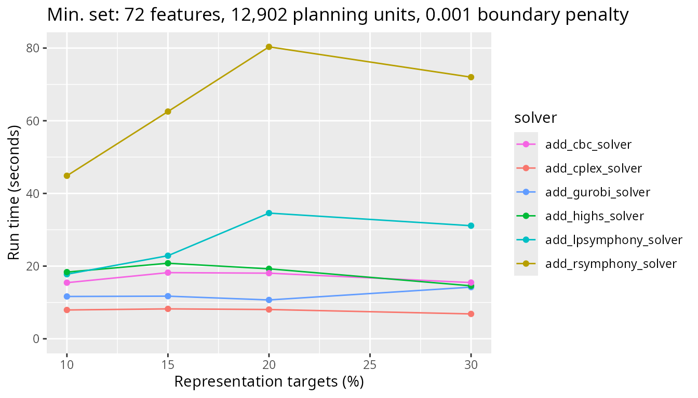
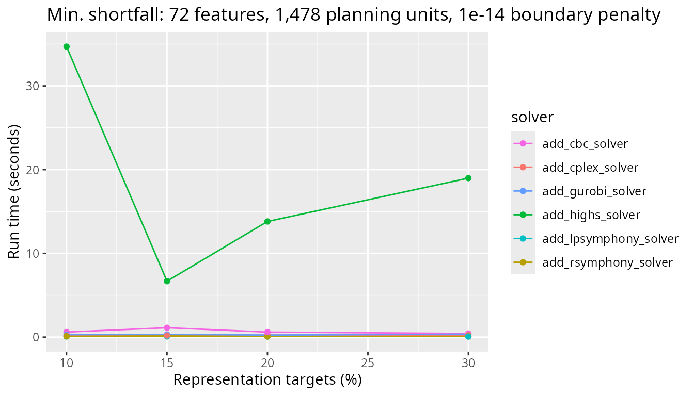

Introduction
The prioritizr R package supports a variety of optimization
solvers for generating prioritizations. Specifically, the following
functions can be used: add_gurobi_solver() (interfaces with
the Gurobi software),
add_cplex_solver() (interfaces with the IBM
CPLEX software), add_cbc_solver() (interfaces with
the CBC software
using the rcbc
R package), add_rsymphony_solver() (interfaces
with the SYMPHONY
software using the Rsymphony R
package), add_lpsymphony_solver() function (interfaces
with the SYMPHONY
software using the lpsymphony
R package), and the add_highs_solver() function
(interfaces with the HiGHS
software) using the highs
package. Broadly speaking, IBM CPLEX and Gurobi
tend to be the fastest among the supported solvers. Although they are
both commercial software, special academic licenses are available at no
cost.
In this vignette, we will explore the performance of different solvers. Using a benchmark analysis, we will see how well they can tackle problems of varying size (e.g., number of planning units) and complexity (e.g., adding boundary length penalties to reduce spatial fragmentation). Since users working in governmental and non-governmental organizations may need to purchase licenses for IBM CPLEX or Gurobi to use them, this vignette also aims to provide insight into whether the potential benefits of purchasing such licenses is worthwhile. Indeed – depending on the size and complexity of a given conservation planning problem – solvers based on open source software may only take slightly longer than commercial solvers.
Methods
This vignette will report the results of a benchmark analysis. To reduce computational burden, we previously completed the benchmark analysis and uploaded the results to an online repository (code available online). This analysis involved generating prioritizations using different solvers and recording how long it took for the solvers to finish. To help understand the factors that influence how long it takes for solvers to generate a prioritization, we examined a suite of conservation planning problems with varying size (i.e., number of planning units), complexity (i.e., varying penalties to reduce spatial fragmentation), and with different objective functions (i.e., metric used to evaluate competing solutions). In this section, we will download the results for the previously completed benchmark analysis and examine the parameters used to conduct it.
Download benchmark results
Let’s download the results of the benchmark analysis. This code will save the results to a temporary folder on your computer. Please note that downloading the results might take several minutes to complete depending on your internet connection. If you are unable to download the results onto your computer, you can view the graphs shown in this vignette. You only need to run the code in this vignette if you wish to explore certain aspects of the results yourself.
Benchmark parameters
After downloading the benchmark results, let’s have a look at the parameters that were used to conduct it. Note that all benchmark scenarios have 72 features.
# numbers of planning units examined the benchmark analysis
n_planning_units <- sort(unique(benchmark_results$number_of_planning_units))
print(n_planning_units)## [1] 1478 12902 102242 606180
# number of features (e.g., number of different species examined)
sort(unique(benchmark_results$number_features))## [1] 72
# representation targets,
# units are proportion of the total amount of each feature (e.g., 0.1 = 10%)
sort(unique(benchmark_results$relative_target))## [1] 0.10 0.15 0.20 0.30## [1] 1478 12902 102242 606180## [1] "add_min_set_objective" "add_min_shortfall_objective"
# extract boundary penalty values,
# note that different values were examined for different objective functions
boundary_penalty_values <-
benchmark_results %>%
split(.$objective) %>%
lapply(function(x) unique(x$boundary_penalty))
## boundary penalty values for min set objective function
sort(boundary_penalty_values$add_min_set_objective)## [1] 0e+00 1e-05 1e-03
## boundary penalty values for min shortfall objective function
sort(boundary_penalty_values$add_min_shortfall_objective)## [1] 0e+00 1e-14 1e-13
# budgets examined for budget-limited objectives (e.g., 0.1 = 10% of total cost)
## note that the min set objective function does not use a budget,
## and thus it has a NA value
tibble(
objective = unique(benchmark_results$objective),
budget = unique(benchmark_results$budget)
)## # A tibble: 2 × 2
## objective budget
## <chr> <dbl>
## 1 add_min_set_objective NA
## 2 add_min_shortfall_objective 0.1Helper function
Now we will define a helper function to quickly plot the results from the benchmark analysis. This will be helpful for interpreting the results of the benchmark analysis in the following section.
# define helper function to create plots
plot_benchmark <- function(
objective, n_pu, boundary_penalty, solver = NULL){
# assert arguments are valid
## verify parameters with no default arguments
assertthat::assert_that(
assertthat::is.count(n_pu), assertthat::noNA(n_pu),
n_pu %in% unique(benchmark_results$number_of_planning_units),
assertthat::is.number(boundary_penalty), assertthat::noNA(boundary_penalty),
assertthat::is.string(objective), assertthat::noNA(objective),
objective %in% unique(benchmark_results$objective)
)
## set default argument for solver if needed
if (is.null(solver)) {
solver <- unique(benchmark_results$solver)
}
## verify solver argument
assertthat::assert_that(
is.character(solver), all(solver %in% benchmark_results$solver)
)
## verify that only a single set of features was used
assertthat::assert_that(
dplyr::n_distinct(benchmark_results$number_features) == 1
)
# prepare data for plotting
## rename variables to avoid scoping issues
sol <- solver
obj <- objective
bp <- boundary_penalty
## subset data relevant for plotting
plot_data <-
benchmark_results %>%
filter(.$objective == obj, .$solver %in% sol,
.$number_of_planning_units == n_pu,
.$boundary_penalty == bp
)
## scale run time to helpful units for plotting
plot_units <-
dplyr::case_when(
# show hours if max(run_time) > 3 h
max(plot_data$run_time, na.rm = TRUE) > 60 * 60 * 3 ~ "hours",
# show minutes if max(run_time) > 3 M
max(plot_data$run_time, na.rm = TRUE) > 60 * 3 ~ "minutes",
# else show seconds
TRUE ~ "seconds"
)
plot_data$min_set_scaled <-
plot_data$run_time %>%
units::set_units(s) %>%
units::set_units(plot_units, mode = "standard") %>%
as.numeric()
## plot labels
n_f <- unique(benchmark_results$number_features)[1]
plot_title =
paste0(
dplyr::case_when(
objective == "add_min_set_objective" ~ "Min. set",
objective == "add_min_shortfall_objective" ~ "Min. shortfall",
TRUE ~ objective),
": ",
formatC(
n_f, big.mark = ",", digits = 2, format = "f",
drop0trailing = TRUE),
" features, ",
formatC(
n_pu, big.mark = ",", digits = 2, format = "f",
drop0trailing = TRUE),
" planning units"
)
if (bp > 1e-15) {
plot_title <- paste0(plot_title, ", ", bp, " boundary penalty")
}
## determine colors for solvers (so that solvers always have same color
solver_names <- unique(benchmark_results$solver)
solver_colors <- scales::hue_pal()(length(solver_names))
names(solver_colors) <- solver_names
# return plot for selected benchmark runs
# (suppress warnings when a solver doesn't have results)
suppressWarnings(
print(
ggplot(
data = plot_data,
mapping = aes(
x = relative_target, y = min_set_scaled, color = solver
)
) +
scale_y_continuous(limits = c(0, NA_real_)) +
geom_line() +
geom_point() +
scale_x_continuous(labels = function(x) x * 100) +
scale_color_manual(values = solver_colors) +
labs(
title = plot_title,
x = "Representation targets (%)",
y = paste0("Run time (", plot_units, ")"))
)
)
}Results
We will now inspect the results of the benchmark analysis. The
benchmark_results object is a table (i.e.,
tibble()) containing information for each benchmark run
(e.g., run time), and the solution_raster_data object
(i.e., RasterStack) contains the prioritizations generated
for each benchmark run. Note that the benchmarks were run using a time
limit (i.e., 6 hours), meaning that some solvers were not able to
generate a prioritization in certain runs (indicated by the
exceeded_run_time column).
# extract columns from table with relevant data
benchmark_results <-
benchmark_results %>%
dplyr::select(
id, number_of_planning_units, number_features,
objective, budget, relative_target, boundary_penalty,
solver, status, total_time, run_time, exceeded_run_time
)
# preview results
print(benchmark_results)## # A tibble: 576 × 12
## id number_of_planning_u…¹ number_features objective budget relative_target
## <chr> <int> <int> <chr> <dbl> <dbl>
## 1 0095… 12902 72 add_min_… NA 0.3
## 2 00da… 606180 72 add_min_… 0.1 0.1
## 3 00e9… 606180 72 add_min_… NA 0.2
## 4 0115… 1478 72 add_min_… 0.1 0.3
## 5 0125… 1478 72 add_min_… NA 0.15
## 6 012c… 1478 72 add_min_… NA 0.3
## 7 0184… 606180 72 add_min_… NA 0.2
## 8 02ae… 606180 72 add_min_… 0.1 0.2
## 9 03fd… 102242 72 add_min_… NA 0.3
## 10 0408… 12902 72 add_min_… 0.1 0.15
## # ℹ 566 more rows
## # ℹ abbreviated name: ¹number_of_planning_units
## # ℹ 6 more variables: boundary_penalty <dbl>, solver <chr>, status <chr>,
## # total_time <dbl>, run_time <dbl>, exceeded_run_time <lgl>Specifically, the benchmark_results object has the
following columns:
-
id: Unique identifier for run. -
number_of_planning_units: Number of planning units in run. -
number_features: Number of features in run. -
objective: Objective function for problem in run. -
budget: Budget used in run (missing [NA] values denote objectives that do not use budgets). -
relative_target: Targets used in run (expressed as a proportion). -
boundary_penalty: Boundary penalty value used in run (zeros indicate no penalties). -
solver: Solver used in run to generate prioritization. -
status: Status from solver after generating prioritization. -
total_time: Overall time (seconds) elapsed for generating prioritization in the run. -
run_time: Time (seconds) elapsed for the solver to generate prioritization in the run. -
exceeded_run_time: Did the run time exceed the maximum time limit?
After importing the data, let’s examine the run times for each solver across all benchmark runs. To achieve this, we will create a box plot. Since we prefer solvers that generate prioritizations in a short period of time, solvers that have shorter (lower) run times are considered better. When looking at this box plot, we can see that average run times for the IBM CPLEX and Gurobi solvers are consistently low and don’t differ much from each other. Additionally, the run times for the open source CBC solver are generally low too. However, there are some cases where the run times for the CBC solver are much higher than those for the IBM CPLEX and Gurobi solvers. We can also see that the lpsymphony and Rsymphony solvers – which both use the open source SYMPHONY software – can take much longer to generate prioritizations than the other solvers.
# plot overall summary of solver performance
ggplot(
data =
benchmark_results %>%
mutate(
min_set_scaled = as.numeric(
set_units(set_units(run_time, "seconds"), "hours")
)
),
aes(x = solver, y = min_set_scaled)
) +
geom_boxplot() +
theme(axis.text.x = element_text(size = 7)) +
labs(x = "Solver", y = "Run time (hours)")## Warning: Removed 33 rows containing non-finite outside the scale range
## (`stat_boxplot()`).Minimum set results (no boundary penalty)
Now, let’s investigate the solver behavior in more detail. Specifically, we will examine the benchmark results generated for the minimum set objective function. This is because the minimum set objective function is the most commonly used objective function in systematic conservation, due to the fact that it is used by the Marxan decision support software. To begin with, let’s examine the results for the smallest and simplest conservation planning problems examined in the benchmark analysis. Here, all prioritizations were generated using problems that involved 1,478 planning units and did not contain any boundary length penalties. Since all benchmark scenarios have 72 features – as mentioned earlier – all of these prioritizations were generated with 72 features. When looking at the results, we can see that all solvers solve the problem in a comparable amount of time across all targets investigated.
plot_benchmark(
objective = "add_min_set_objective",
n_pu = n_planning_units[1],
boundary_penalty = 0
)Next, let’s look at the results for a more realistic problem involving 12,902 planning units and see how the timing of the different solvers used compares. Note that all other factors (e.g., absence of boundary length penalties) are the same as for the previous graph.
plot_benchmark(
objective = "add_min_set_objective",
n_pu = n_planning_units[2],
boundary_penalty = 0
)
Next, we will look at a medium sized problem with 102,242 planning units. Now we really start to see the difference between the Rsymphony and lpsymphony solvers – which use the SYMPHONY software – and the other solvers.
plot_benchmark(
objective = "add_min_set_objective",
n_pu = n_planning_units[3],
boundary_penalty = 0
)Finally, let’s look at timing comparisons for a large problem with 606,180 planning units. We can see that both the Rsymphony and lpsymphony solvers are really taking a much longer time to generate prioritizations now.
plot_benchmark(
objective = "add_min_set_objective",
n_pu = n_planning_units[4],
boundary_penalty = 0
)
To get a better sense of how the faster solvers (i.e., based on CBC, IBM CPLEX, Gurobi) compare for such a large problem, let’s take a closer look at these three solvers. Interestingly, we can see that the solver based on the open source CBC software is slightly faster – by a few minutes – than the other solvers.
plot_benchmark(
objective = "add_min_set_objective",
n_pu = n_planning_units[4],
boundary_penalty = 0,
solver = c("add_cbc_solver", "add_cplex_solver", "add_gurobi_solver")
)Minimum set results with low boundary penalty
Now let’s look at the same problem types, but this time with a low
boundary length penalty value added to the problem formulation. To start
with, we will look at scenarios with a low boundary_penalty
value (i.e., \(10^{-5}\)). Let’s start
again with the smallest problem size we’ve benchmarked. This problem has
only 1,478 planning units.
plot_benchmark(
objective = "add_min_set_objective",
n_pu = n_planning_units[1],
boundary_penalty = boundary_penalty_values$add_min_set_objective[2]
)Next, let’s look at the results for a more realistic problem with 12,902 planning units and see how the timing of the different solvers used compares.
plot_benchmark(
objective = "add_min_set_objective",
n_pu = n_planning_units[2],
boundary_penalty = boundary_penalty_values$add_min_set_objective[2]
)Next, we will look at a medium sized problem with 102,242 planning units. Now we really start to see the difference between lpsymphony and Rsymphony solvers and the other solvers.
plot_benchmark(
objective = "add_min_set_objective",
n_pu = n_planning_units[3],
boundary_penalty = boundary_penalty_values$add_min_set_objective[3]
)Finally, let’s look at timing comparisons for a large problem with 606,180 planning units. As with the scenario without boundary penalties, lpsymphony and Rsymphony solvers take a lot longer to generate prioritizations than the other three solvers.
plot_benchmark(
objective = "add_min_set_objective",
n_pu = n_planning_units[4],
boundary_penalty = boundary_penalty_values$add_min_set_objective[2]
)
Similar to earlier, let’s take a look at just the CBC, IBM CPLEX, and Gurobi solvers. We can see that the Gurobi solver has the best performance, generating prioritizations in under half an hour in all cases. This result shows that the commercial solvers can massively outperform the open source solvers for large-scale problems with boundary length penalties.
plot_benchmark(
objective = "add_min_set_objective",
n_pu = n_planning_units[4],
boundary_penalty = boundary_penalty_values$add_min_set_objective[2],
solver = c("add_cbc_solver", "add_cplex_solver", "add_gurobi_solver")
)
Minimum set results with high boundary penalty
Now let’s look at the same problem types, but this time with a high boundary length penalty parameter added to the problem formulation (i.e., \(0.001\)). Let’s start again with the smallest problem size we’ve benchmarked. This problem has only 1,478 planning units. Although there are some differences between the solvers, they all have very similar run times (i.e., all less than one second).
plot_benchmark(
objective = "add_min_set_objective",
n_pu = n_planning_units[1],
boundary_penalty = boundary_penalty_values$add_min_set_objective[3]
)
Next, let’s look at the results for a more realistic problem with 12,902 planning units and see how the timing of the different solvers used compares.
plot_benchmark(
objective = "add_min_set_objective",
n_pu = n_planning_units[2],
boundary_penalty = boundary_penalty_values$add_min_set_objective[3]
)
Next, we will look at a medium sized problem with 102,242 planning units. We again see the difference between Rsymphony and lpsymphony solvers and the other solvers.
plot_benchmark(
objective = "add_min_set_objective",
n_pu = n_planning_units[3],
boundary_penalty = boundary_penalty_values$add_min_set_objective[3]
)
Finally, let’s look at timing comparisons for a large problem with 606,180 planning units. As with the previous scenarios, Rsymphony and lpsymphony solvers take a lot longer to generate prioritizations than the other solvers.
plot_benchmark(
objective = "add_min_set_objective",
n_pu = n_planning_units[4],
boundary_penalty = boundary_penalty_values$add_min_set_objective[3]
)
Similar to before, let’s take a look at just the CBC, IBM CPLEX, and Gurobi solvers. We can see that Gurobi has the best performance. This result further emphasizes the potential speed gains of commercial solvers for large-scale conservation planning problems with boundary penalties.
plot_benchmark(
objective = "add_min_set_objective",
n_pu = n_planning_units[4],
boundary_penalty = boundary_penalty_values$add_min_set_objective[3],
solver = c("add_cbc_solver", "add_cplex_solver", "add_gurobi_solver")
)Minimize shortfall results (no boundary penalty)
Now, let’s investigate the solver behavior for the minimum shortfall objective function. Let’s start with the smallest problem size examined. All benchmark scenarios have 72 features. This problem has only 1,478 planning units. We can see that all solvers solve the problem in a comparable amount of time across all targets investigated.
plot_benchmark(
objective = "add_min_shortfall_objective",
n_pu = n_planning_units[1],
boundary_penalty = 0
)
Next, let’s look at the results for a more realistic problem with 12,902 planning units and see how the timing of the different solvers used compares. Here, the CBC solver takes slightly longer than the other solvers.
plot_benchmark(
objective = "add_min_shortfall_objective",
n_pu = n_planning_units[2],
boundary_penalty = 0
)Next, we will look at a medium sized problem with 102,242 planning units. Now we see a larger difference between the CBC solver and the other solvers, with the CBC solver taking several minutes longer to complete.
plot_benchmark(
objective = "add_min_shortfall_objective",
n_pu = n_planning_units[3],
boundary_penalty = 0
)
Finally, let’s look at timing comparisons for a large problem with 606,180 planning units. We can see that all the open source solvers (i.e., CBC, Rsymphony and lpsymphony) take a lot longer than the commercial solvers (i.e., IBM CPLEX and Guorbi).
plot_benchmark(
objective = "add_min_shortfall_objective",
n_pu = n_planning_units[4],
boundary_penalty = 0
)
Minimize shortfall results with low boundary penalty
Now let’s look at the same problem type, but this time with a low
boundary_penalty parameter added to the problem formulation
(i.e., \(0\)). Let’s start again with
the smallest problem size examined. This problem has only 1,478 planning
units.
plot_benchmark(
objective = "add_min_shortfall_objective",
n_pu = n_planning_units[1],
boundary_penalty = boundary_penalty_values$add_min_shortfall_objective[2]
)Next, let’s look at the results for a more realistic problem with 12,902 planning units and see how the timing of the different solvers compare. Similar to before, we can see the CBC solver takes slightly longer than the other solvers.
plot_benchmark(
objective = "add_min_shortfall_objective",
n_pu = n_planning_units[2],
boundary_penalty = boundary_penalty_values$add_min_shortfall_objective[2]
)
Next, we will look at a medium sized problem with 102,242 planning units. Now we really start to see the difference between the CBC solver and the other solvers. Additionally, the Rsymphony and lpsymphony solvers also take considerably longer than the commercial solvers too.
plot_benchmark(
objective = "add_min_shortfall_objective",
n_pu = n_planning_units[3],
boundary_penalty = boundary_penalty_values$add_min_shortfall_objective[2]
)Finally, let’s look at timing comparisons for a large problem with 606,180 planning units. The CBC solver now performs better than the Rsymphony and lpsymphony solvers, which can take over a whole day to complete.
plot_benchmark(
objective = "add_min_shortfall_objective",
n_pu = n_planning_units[4],
boundary_penalty = boundary_penalty_values$add_min_shortfall_objective[2]
)To get a better sense of how the faster solvers compare (i.e., CBC, IBM CPLEX, and Gurobi), let’s take a closer look at these three solvers. We can see that the CBC solver takes a lot longer to generate prioritizations than the IBM CPLEX and Gurobi solvers. This result suggests that IBM CPLEX and Gurobi could be really beneficial for large-scale conservation planning problems with boundary length penalties and the minimum shortfall objective function.
plot_benchmark(
objective = "add_min_shortfall_objective",
n_pu = n_planning_units[4],
boundary_penalty = boundary_penalty_values$add_min_shortfall_objective[2],
solver = c("add_cbc_solver", "add_cplex_solver", "add_gurobi_solver")
)Minimize shortfall results with high boundary penalty
Now let’s look at the same problem types, but this time with a higher
boundary_penalty parameter added to the problem formulation
(\(10^{-14}\)). Let’s start again with
the smallest problem size examined. This problem has only 1,478 planning
units.
plot_benchmark(
objective = "add_min_shortfall_objective",
n_pu = n_planning_units[1],
boundary_penalty = boundary_penalty_values$add_min_shortfall_objective[3]
)
Next, let’s look at the results for a greater number of planning units (i.e., 12,902 planning units) and see how the timings compare. All the solvers have a similar run time now. Interestingly, the Gurobi solver is the slowest – but only by a couple of minutes – for these benchmark parameters.
plot_benchmark(
objective = "add_min_shortfall_objective",
n_pu = n_planning_units[2],
boundary_penalty = boundary_penalty_values$add_min_shortfall_objective[3]
)
Next, we will look at a medium sized problem with 102,242 planning units. Similar to some of the previous results for the minimum shortfall objective, the CBC solver is the slowest and the IBM CPLEX and Gurobi commercial solvers are fastest.
plot_benchmark(
objective = "add_min_shortfall_objective",
n_pu = n_planning_units[3],
boundary_penalty = boundary_penalty_values$add_min_shortfall_objective[3]
)Finally, let’s look at timing comparisons for a large problem with 606,180 planning units. We can see that the benchmark times vary greatly for the Rsymphony and lpsymphony solvers, with run times ranging from one to two whole days. Additionally, although the CBC solver can still require several hours to generate a prioritization, it now outperforms the Rsymphony and lpsymphony solvers. Finally, the IBM CPLEX and Gurobi solvers perform much, much better than all the other solvers.
plot_benchmark(
objective = "add_min_shortfall_objective",
n_pu = n_planning_units[4],
boundary_penalty = boundary_penalty_values$add_min_shortfall_objective[3]
)Conclusion
The benchmark results demonstrate that the time required to solve a conservation planning problem can vary considerably depending on the size and complexity of the problem, and also the solver used to generate the prioritization. Indeed, some solvers (e.g., Rsymphony solver) may require many hours to solve a problem that other solvers (e.g., CBC or Gurobi solvers) can solve within minutes. Broadly speaking, we recommend using the Gurobi and IBM CPLEX solvers where possible. This is because they often have the best performance. Although academics can obtain a special license to use these solvers at no cost, conservation planners working in governmental or non-governmental organizations may not have access to these solvers. In such cases, we recommend using the CBC solver because it generally has better performance than the other open source solvers (i.e., the Rsymphony and lpsymphony solvers). Since the CBC solver did not always have better performance than the other open source solvers, we recommend trying the lpsymphony solver if the CBC solver is taking a long time to solve a particular problem.